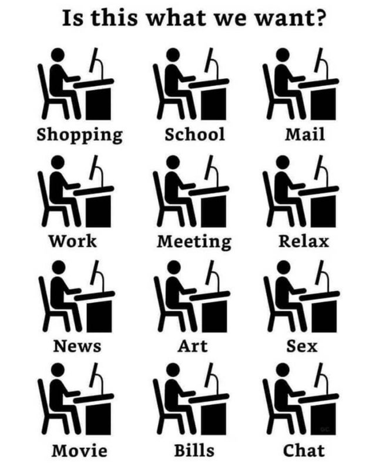

Technology and Evolutionary Mismatch
1. Technology Causes Just As Many Problems As It Solves
The problem with solving third-world problems with technology is that many simultaneous technological changes, malevolent actors, and evolutionary mismatch make it so that technology creates just as many problems (first-world problems) as it solves. In many cases, the new problems are just as bad as the old problems, and arguably worse in some cases. People tend to be more oblivious to the downsides of technology than they are to upsides. When I say “first-world problems”, I’m not just talking about minor inconveniences, I’m also referring to all the problems mentioned in the following lists.
1.1. Overuse Of Technology
- less in-person social interaction
- insomnia caused by reception of blue light within human eyes
- carpal tunnel and repetitive stress injury caused by non-ergonomic keyboards
- unrealistic expectations for relationships, life, etc.
- light pollution
- traffic congestion
- decreased attention spans
- identity theft
- hacking
- worrying about hacking and identity theft
- worrying about personal information being collected by companies when you buy/use their products
- The increasing potential for smokescreens by AI will make it ever more difficult to distinguish between what’s fake and what’s real in the world.
- cryptocurrencies are making it easier for people to commit crimes
- The development of myopia in the modern world
- Why Self Driving Cars are a Big Scam
- The correct solution to saving lives on public roads would be to take bad drivers off the road, or to improve the safety of the roads. Self-Driving cars could only reduce traffic if they stop bad drivers from driving.
- Self-Driving cars will make it easier for the government, car manufacturers, and other people with power to control where people go.
- Self-driving cars rely on external sensors. If the sensors are blocked (e.g. snow, sandstorm debris, dirt) or broken somehow, then the cars will malfunction.
- Traffic is designed to control human cars, not self-driving cars. So putting driverless cars on human roads isn’t very compatible with the current roads. Even if traffic-less roads were designed for self-driving cars, that would require doubling urban infrastructure, which wouldn’t improve anything.
- Modern traffic is designed to regulate human cars, not self-driving cars. So putting driverless cars on human roads isn’t very compatible with the current roads. Even if traffic-less roads were designed for self-driving cars, that would require doubling urban infrastructure, which wouldn’t improve anything.
- Self-driving cars wouldn’t resolve most of the existing problems with cars. The better solution is to build up density in rural areas and have as many cities switch to high-speed rail as possible.
- Amusing Ourselves to Death? - Gwern
- A suggested x-risk/Great Filter is the possibility of advanced entertainment technology leading to wireheading/mass sterility/population collapse and extinction.
- As media consumption patterns are highly heritable, any such effect would trigger rapid human adaptation, implying extinction is almost impossible unless immediate collapse or exponentially accelerating addictiveness.
1.2. Overuse Of Internet
- depression and alienation caused by social media websites
- loneliness
- increased gossip
- cancel culture
- online echo chambers
- virtue-signaling tragedy of the commons, made even worse thanks to social media
- captive subscribed brainwashed audiences
- invasive advertisements, spam, commercials, solicitors, etc.
- over-exposure of personal information
- porn addictions
- abnormal behavior caused by watching pornography
- lack of confidence in body-image
The most notorious virtue-signalers implicitly feel that #1 goal of someone’s life is to be considered a good human, not actually be a good human, although they don’t explicitly realize this.
1.3. Diseases That Are More Common In Developed Countries
- depression
- binge eating disorder
- anorexia / bulimia
- obesity
- drug addictions
- sedentary lifestyles
- heart problems
- cardiovascular problems
- myopia
1.3.1. Diseases That More Commonly Appear In People Who Live Longer
- Dementia and Alzheimer’s
- Cancer
- Osteoporosis
- Mobility Issues
1.4. Other Problems
- rising dysgenics
- imminent overpopulation crises
- inceldom; it’s harder than ever to find a partner these days.
- materialistic consumer culture
- boring jobs
- graveyard shift jobs
- rigid scheduling
- lack of sleep caused by demanding jobs (this also occurred during the industrial revolution)
- pets’ physical disorders caused by selective breeding
- needing to euthanize pets
- time-demanding world
- other social problems
- how Apple AirTags have been abused for stalking people, despite being intended to help people keep track of their potentially missing belongings.
- increased carbon emissions that cause environmental problems
- increased pollution
- increased plastic pollution
- car accidents
- ever-decreasing linguistic diversity (sad if you value linguistic diversity and/or find languages to be interesting)
:CUSTOMID: AI-pros-cons
2. Evolutionary Mismatch
There are essentially two main ways to solve evolutionary mismatch. We can imagine two distinct worlds, a Primitivist world where humans are living in an environment that is very similar to the one the evolved to live in for most of human history, and a technologically-advanced world (Pragmatopia) where humans are well-adapted to living in a high-tech environment, whether that be through selection via EPC, genetic-engineering, the mass adoption of stable memetic traditions, or some combination of those factors. The Pragmatopian World is probably the closest thing that could ever be to a transhumanist utopia, but it would probably be less technologically advanced than the transhumanists are hoping for.
We can also imagine a third world where evolutionary mismatch is not resolved at all, much like the one that the Modern World is currently living in as of the early 21st century. This third world is far less pleasant than the Primitivist or the Pragmatopian Worlds because evolutionary mismatch is a major cause for social unrest, political instability, massive struggling, and the loss of purpose via the disruption of the power process. Technology, society, and culture change faster than evolution can, which is how evolutionary mismatch managed to occur worldwide within just 200 years since the Industrial Revolution.
Although Primitivism solves the problem of Evolutionary Mismatch, Transhumanism does not, nor does it even recognize it as a problem that needs to be addressed.
:CUSTOMID: evolutionary-mismatch
2.1. The Effects Of Technology On Human Evolution
When deciding if a new technology or social change should be made to the population, we should be asking if it will be worth the impact that it will have on human evolution.
- For example, vaccines are worth implementing since they don’t significantly increase the dysgenics of the population, for as long as it is possible to mass produce vaccines for all humans, and all livestock.
- On the other hand, a public healthcare system is a bad idea since it subsidizes unhealthy people and unhealthy lifestyles, whereas allowing natural selection would make it possible to get rid of dysgenic genes that make people more likely to smoke, more likely to become obese / sedentary, more likely to get cancer, etc.
If many or most people who begin to use a new technology to make their lives easier or more productive eventually become dependent on that technology(ies), maybe the goal of technological advancement isn’t necessarily to find an easier way of doing things, but rather to become dependent on a better way of doing things rather than dependent on a less productive or less efficient way of doing things.
Near the end of this podcast episode, Dr. Gregory Clark talks with Steven Hsu about how the turning point for when average IQ started to decrease instead of increase was around the 1850s for Europe.
3. The Power Process
The Power Process, as defined and explained in Industrial Society and Its Future by Ted Kaczynski
The “Power Process” described by Ted Kaczynski is most similar to the following terms that are used in Academia:
When Humanists are clamoring about wanting people to “flourish”, they don’t specifically define the term, but what they most likely mean that they want people to go through the power process. Unfortunately, Humanists don’t have the philosophical grounding to understand what the power process is, or how technology prevents people from experiencing the power process.
Transhumanists don’t have any solutions for ensuring that people are able to find purpose and meaning in their lives in the Modern World. Somehow, they believe that creating even more technology will automatically make everything better, even though it will more likely make the problem even worse by making purpose even harder to attain. On the other hand, Anarcho-Primitivism has very easy solutions for ensuring that people will still be able to find purpose and meaning. Anarcho-Primitivism seems in line with many absurdist and existentialist ideas.
4. Transhumanism
There are multiple problems with Transhumanism:
- Transhumanism does not solve the rising dysgenics or imminent overpopulation crises that humanity is destined to deal with in the 21st century.
- The biggest problems currently facing humanity are social problems, not technological problems. So Transhumanism is a huge distraction from what we should be focusing on.
- Technology creates just as many problems as it solves, yet Transhumanists don’t acknowledge this.
- The technology of the modern world has already made it harder for people to go through the power process, and even more technology will just make that even worse.
- Transhumanists are over-optimistic about: 1. the usefulness/practicality of the new technologies that we will be able to create, 2. the speed at which we will be able to create new technologies, and 3. our ability to create some of the things that Transhumanists hope that humans will create.
- There’s not much to gain from creating a new information pathway between brain and computers since human hands are already reasonably efficient at doing that. A massive amount of neuroscience knowledge and technology would also be required to make such an endeavor possible, and the end result wouldn’t be much more efficient at doing the things that we can already do.
4.1. Futurist Fantasies
For a more extensive critique of some Transhumanism ideals and its ambitions for the Future, I recommend reading: Futurist Fantasies by T. K. Van Allen.
5. Anarcho-Primitivism
Ted Kaczynski got most of his philosophy and ideas on technology from The Technological Society by Jacques Ellul. There are other books that people could read about on Anarcho-Primitivism, but I don’t know which to recommend.
Read More: Neo-Luddism.
Read More: Simple Living.
(right-click the images and open them in a new tab to view them in full resolution)
|  |  |
 |
Personally, I like Anarcho-Primitivism more than Transhumanism. It feels more natural to me, and I know wouldn’t ever have to worry about losing a sense of purpose in life and not being able to go through the Power Process. Anarcho-Primitivist societies don’t have to worry about dysgenics or overpopulation, and I would rather that the world had stayed in a primitivist state for a longer period of time before starting the Industrial Revolution, if it meant that we could avoid the imminent collapse of civilization caused by humanity’s evolutionary mismatch and general ignorance.
5.1. The Feasibility Of Achieving Anarcho-Primitivism
What ultimately matters in this world is who has the power to enforce their rules. A society without technology is destined to always be overrun by a civilization that is significantly more technologically advanced, so it’s just not feasible to sustain a long-term Anarcho-Primitivist society in the long-run, even if it would be arguably better than what we have nowadays.
Also, Anarcho-Primitivists are probably in favor of at least some technology (e.g. vaccinations).
However, Anarcho-Primitivism might stand a chance at succeeding if Modern Industrial Civilization collapses by the end of the 21st century. If there is even the slightest chance that modern civilization will be irrecoverable if it falls and we are interested in preserving it, then we should do everything that we can to save it right now. While I do think that Blithering Genius’s concerns over the predicted fall modern civilization are warranted, I am somewhat skeptical that it would never rebound if it really did fall. We live in very strange times, so the Future is more unpredictable now than it ever has been for all of human history.
6. The Most Influential Inventions Of All Time
- Shipping Container
- The Transistor
- Digital Computers
- The Internet
- Vaccines
- The Printing Press
- The Typewriter
- Telegraph
- Telephone
- Smartphones
- The Caravel
- The Steam Engine
- Wind Mills & Turbines
- Nuclear Bombs
- Nuclear Reactors
- Railroads
- The Automobile
- Airplanes
- The firearm
- Fire
- The Chariot
- Crop Rotation
- The Haber-Bosch Process (needed for modern nitrogen-rich soil)
- Interchangeable Parts
- The Cotton Gin
- Refrigerator
- Radio
- Television
- Vacuum Cleaner
- Dishwasher
- Washing Machine
- Clothes Dryer
- Sewage Systems
6.1. The Most Important Inventions Since The Industrial Revolution
Nearly all the improvements to our standard of living over the past 200 years have NOT involved government:
- Vaccination
- Shipping Container
- Printing Press
- Transistors
- Computers
- Smartphones
- Databases
- Modern Kitchen Appliances
- Water Heater
- Air Conditioner
- Steam Engine
- Light Bulbs
- Photography
- Radios
- Television
- Cheap, Accessible Music
- Locomotives
- Automobiles
- 3D Printers
- Ride-Share Apps
- Airplane Transportation; to be fair, a substantial number of airports are publicly owned
- Reduction in World Poverty
- Improvements in Medical Care and Health Treatments
- Improvements in Building and Construction
- The Internet (funded by government research in the beginning, but 99% is controlled privately)
With the exception of the Internet’s invention being funded by the government, NONE of the inventions that I have stated above were invented by the government. This stands in stark contrast to the list of notable government atrocities that I sent, and that wasn’t even a complete list.
The most important items on this list are probably: 1. Vaccination, 2. The Internet, and the Shipping Container.
6.2. The Most Important Primitive / Pre-Industrial Inventions
- Fire
- Shelter
- Clothing
- Wheel
- Agriculture
- Domesticated Animals
- Building / Hunting / Agriculture Tools
- Aquaducts
- Naval Transportation
- Clocks
- Writing Systems
- Positional Base-10 Numbering System (maybe not developed the same time period as the rest of these, but still important none the less)
7. Modern Civilization Has Been Going Downhill Ever Since The 2000s Started
I’d say that the 80s and 90s were the best time period ever for most of the entire world. The Soviet Union had fallen, most of the world’s economies had ascending economic growth, there was great culture being produced, it still seemed as if there was lots of technological progress to be made, etc.
Everything got so bad after the 1990s: The War on Terror, the Great Recession, the rise of China as a superpower, increasing dysgenics and overpopulation, the NSA scandal, the 2015 European migrant crisis, mass cultural insanity, the rise of Humanism, Trump vs Clinton, unprecedented political partisanship, COVID-19 lockdowns, George Floyd Riots, the fall of Afghanistan, Russia invades Ukraine, global recession, we’ve almost reached peak technology, the upcoming Chinese Real Estate bubble, China might invade Taiwan, etc.
8. What It Would Be Like To Restart Modern Human Civilization If It Falls
Instead of a sudden collapse, humanity will most likely experience a long decline, with some shocks that take us down to lower levels of complex civilization quickly, but not all the way down. It will probably be like a series of steps, and it will differ by region. There are a lot of unknowns. We cannot predict the future in the sense of predicting a sequence of events, but we do know that the current system is unstable, and so we can predict that it will collapse, unless it is reformed in certain ways.
The fall of civilization near the end of the 21st century will likely feature worldwide overpopulation, many cities and societies destroyed by wars caused by said disastrous overpopulation, a deteriorated human genome, global water shortages, global sand shortages (since a particular type of sand is necessary to build semiconductors and is in ever-decreasing supply), untold amounts of urban decay, and so on. Annual heat waves will become more widespread, record breaking temperatures will happen year after year, and many regions will become uninhabitable. This will cause the world population to decline, unless the world can prevent this by somehow altering the atmosphere’s composition to block out more sunlight and bring the Earth back to previous temperatures.
Some other differences if we must make a second attempt to start modern civilization:
- Fully white people will be very rare across the world since the Great Replacement would have depleted the Earth’s European population.
- Fossil fuels may be all gone, especially all the ones that were the easiest to access. If any do remain, they will be difficult to access.
- Humans would have to live in a world of considerably less diversity in flora and fauna, due to the Sixth Recorded Mass Extinction Event.
- Humans have already undergone the encephalization process historically, so even if all the biggest game animals are all gone, this wouldn’t be a problem as long as a stable food source that provides all the necessary nutrients is available to some degree.
- Humans may be more likely to act differently, if somehow knowledge of the past before the Great Collapse (the reverse Industrial Revolution) occurred.
- This knowledge could enable the humans that rediscovered that historical knowledge to act in ways that might avoid some of history’s greatest mistakes.
- The Great Exchange between the Old World and the New World has already happened, so Old World and New World flora, fauna, and crops would still be present on all the continents as long as the people living in their respective places continue to cultivate them.
- Many viral and bacterial diseases that had previously been eradicated from the human population, like polio, tuberculosis, measles, small pox, etc may return if modern vaccinations are no longer possible.
- If diseases continue to exist worldwide to some extent or another and that humanity is unable to sufficiently evolve to it without vaccination, then human populations worldwide will be limited by disease instead of war. This would be somewhat more preferable since war entails violence, the destruction of property, increased rape, and other consequences that are more unfavorable than the ones entailed by sufficiently widespread disease.
- There may be more human genetic diversity in every region around the world due to massive race-mixing that occurred during the 21st century. This could have some positive benefits, but it would probably be a temporary barrier to restarting modern civilization since it would cause populations all around the world to be less adapted to their pre-industrial environments.
- More violent genes would be selected for during and after the Great Collapse since those genes would be more adaptive in an environment where the tremendous cooperation that once held Civilization together has completely ceased on the scale that it once did. This would make it more difficult to restart Civilization.
- All the nuclear power plants would melt down since they could no longer be maintained, if any were still kept running during the Great Collapse.